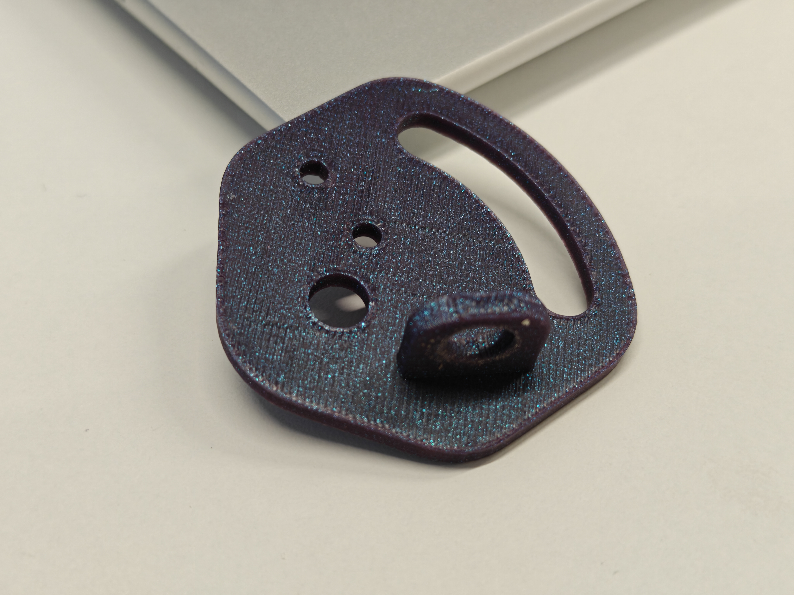
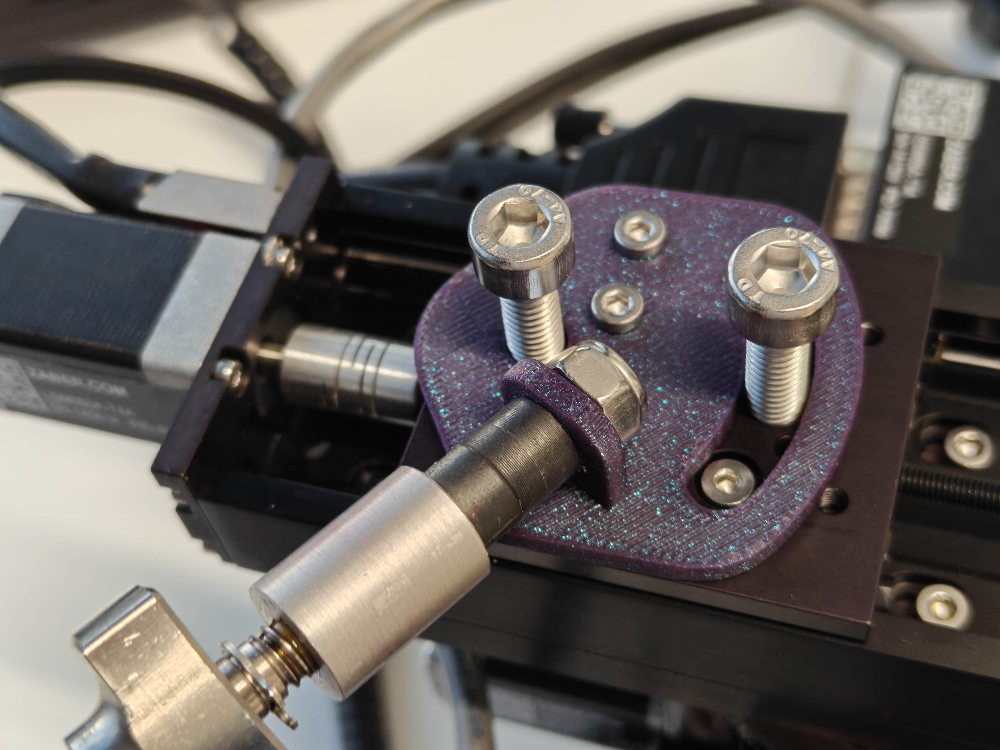
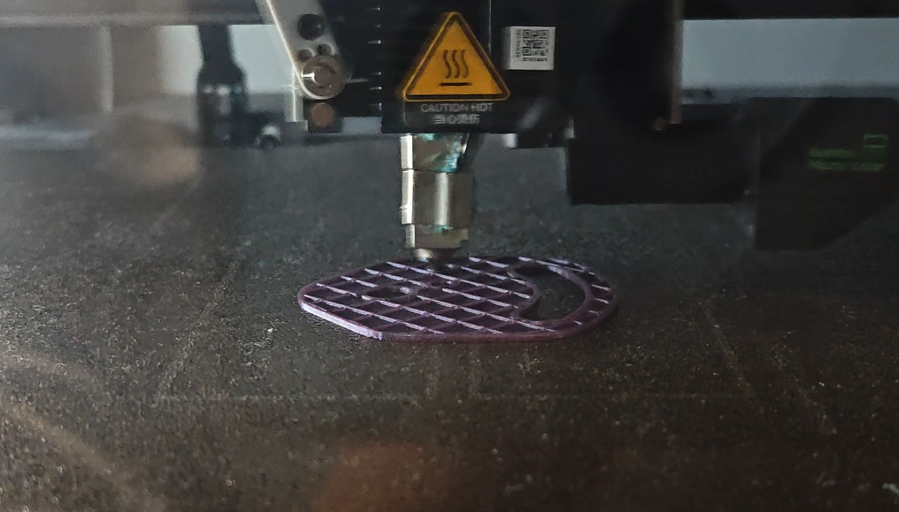

因为需要给AIS项目做一个连接件，用SolidWorks设计了之后，用了KI（卡罗林斯卡医学院）那边实验室的拓竹3D打印机：X1 Carbon打印这个连接件，耗材用的是紫色的Bambu Lab PLA Galaxy。这个连接件一端要安装在一个移动框架上，另一端要支撑一个大概几百克重的超声波探头系统，本身结构很简单，在一个平面上有个垂直连接的小平面，几个毫米厚度，让我惊讶的是其打印出来的强度之高。我本来想打个样来测试尺寸，后面找金属CNC来做这部分，但是在测试安装的时候它就几乎能够支撑探头重量。我于是做了第二版，尽可能加厚其小平面并且加筋处理，整个结构就很稳定了。


毕竟之前也自制过3D打印机，我很感兴趣这个机器的性能，所以打印过程中也仔细研究了一下，这台机器很多地方做的很到位。耗材收纳在干燥箱里面，然后打印前预先挤出一部分料到废料区，一是排空喷嘴里残留的旧料、二是顺便预热，换色换料的时候应该也是靠这一下处理。然后自动调平我查了一下据说是压力传感器做的。切片用的是Bambu Studio，有自己的热床和耗材管理，以及打印的调教好的参数。打印的过程也很享受，有内部相机实时监控状态。打印完成的零件容易取出，表面平整，强度很高。

我彻彻底底拜倒在拓竹的石榴裙之下了，这给我的感受无异于李鸿章访问纽约。我的感受：个人的力量是渺小的，资本的力量是庞大的。我以前总是有一个坏习惯，就是看到任何商品我都有一种极客思维，我的内心总是习惯性地说："这东西很简单，这东西我也能做，这东西成本很低，不值这个价钱"。然而社会是分工的，各司其职才是效率的最优解。实际上现在想想，很多时候应该将自己的时间专注于一件事情（无论是工作还是大项目），然后将换来的金钱用于购买我需要的东西。我逐渐能够理解花大价钱购买一套工具或者一把人体工学椅的人了，也许他自己动手也能做一把舒服的椅子。但是为什么不做更擅长的事情赚钱，然后用钱购买别人做的商品呢。我真的需要相信资本主义市场经济了。